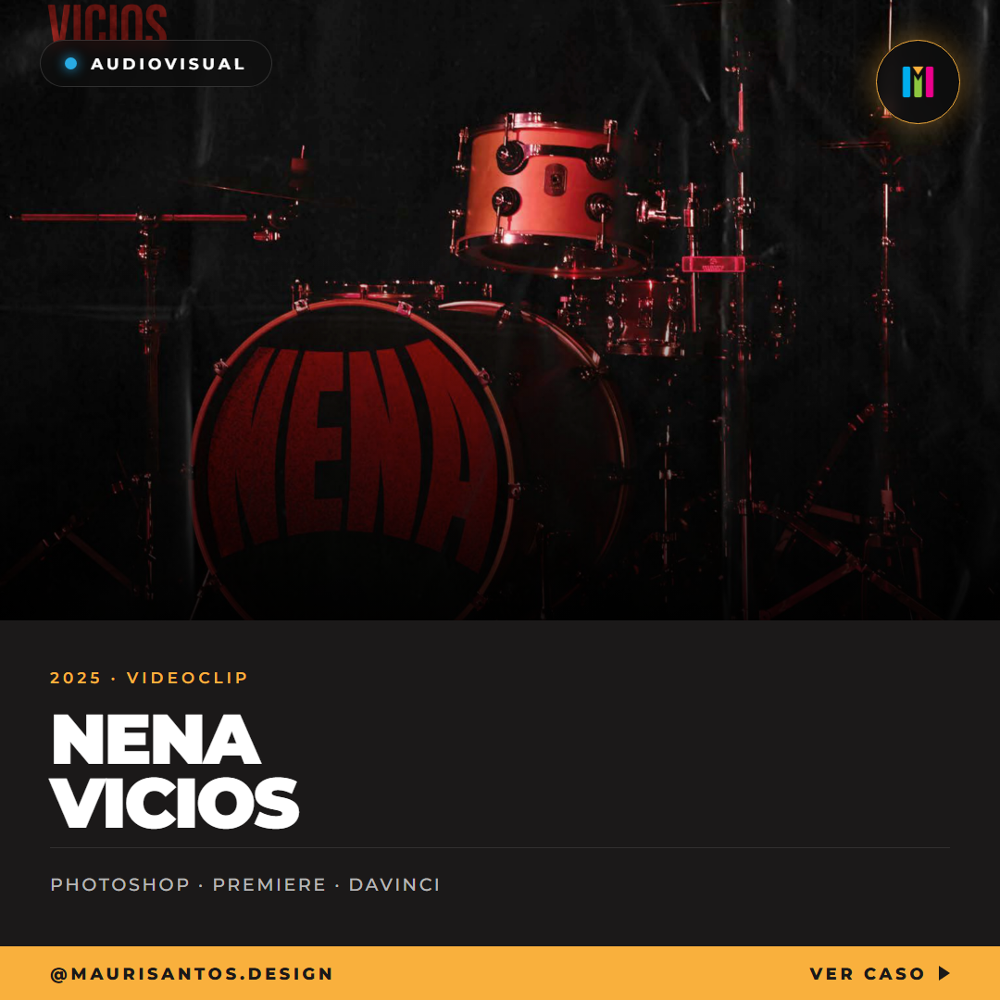
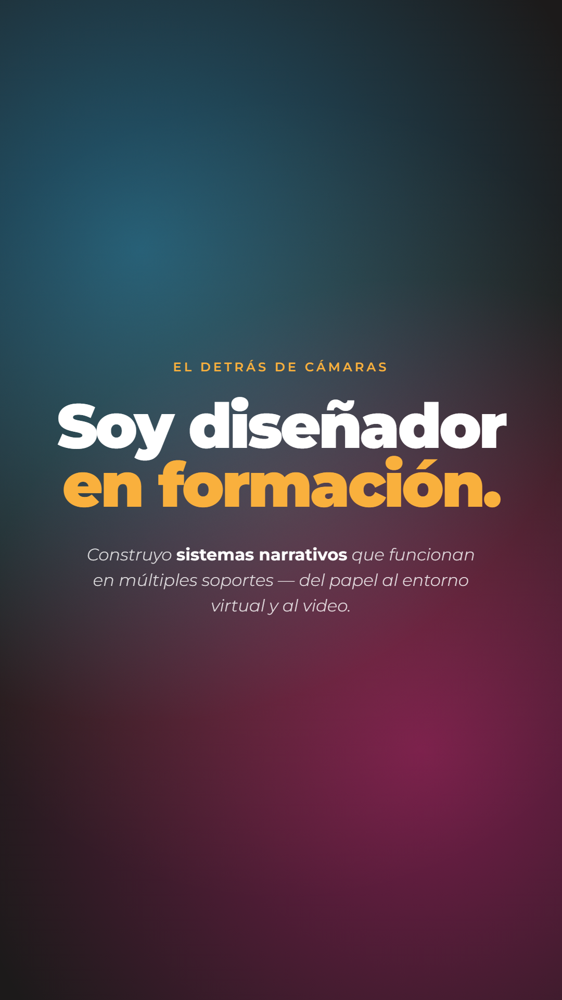
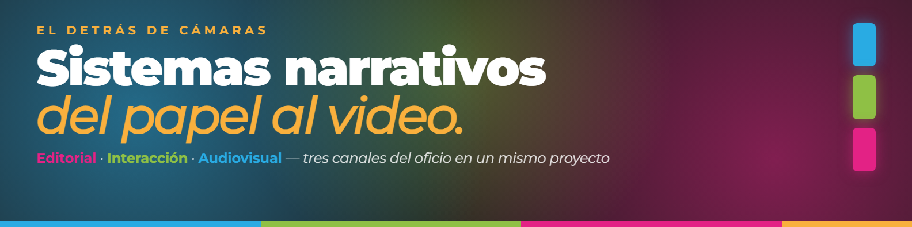
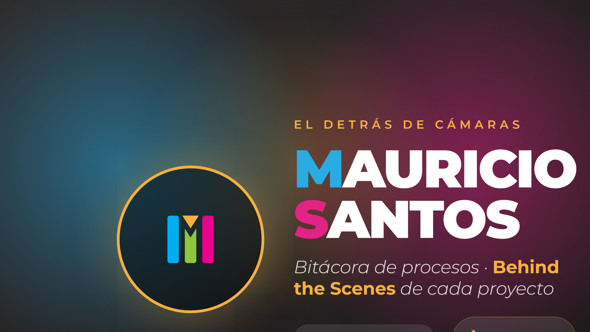

01 · Principal
Behance · Portfolio Web
Trabajos completos con explicación técnica. Piezas terminadas, sinopsis, herramientas, BTS embebido. Dirigido a estudios y reclutadores.
Empecé maquetando publicaciones editoriales — entendiendo que una grilla no es una cárcel, es un idioma. Después vino el código (HTML, CSS, Twine) y descubrí que las mismas jerarquías tipográficas funcionan en pantalla, sólo que ahora las lee un scroll. Y cuando el proyecto pide movimiento, edito el video yo mismo. El ritmo se piensa junto al mensaje, no después.
Piezas que funcionan cruzando soportes. Una infografía LEGO que también podría ser un poster. Una señalética urbana que respira como marca. Un flipbook animado que empezó a lápiz y terminó en DaVinci. El proyecto es uno; la piel cambia.
Cada trabajo viene con su video de proceso — bocetos, errores de código, pruebas de montaje. No es transparencia por transparencia: es evidencia de que las decisiones son intencionales. El resultado final oculta más de lo que muestra.
Portugués y español nativos, inglés B2, italiano básico. Leo bibliografía técnica sin filtros, trabajo con equipos remotos y entiendo que el diseño tiene tantos acentos como los idiomas. Un extra que se traduce en flexibilidad de tono.
Estudios de branding transmedia, agencias de contenido digital y desarrolladoras indie donde el diseñador no tenga que optar entre saber pensar y saber ejecutar. Editar video en Premiere y a la vez armar la grilla en InDesign no son dos habilidades separadas para mí — son la misma disciplina cambiando de herramienta.
Diseñador Gráfico y Multimedia formándose en el 4to año de la carrera en la Universidad Argentina de la Empresa (UADE). Experiencia en diseño editorial, UX/UI básico y proyectos académicos relacionados con infografía y video. Competencias en Adobe Photoshop, Illustrator, InDesign, DaVinci Resolve y Figma.
Algunos de mis proyectos académicos que considero relevantes.
Diseñador multimedia y gráfico en formación. Uno la formalidad del editorial con la capacidad técnica de las experiencias interactivas y el ritmo del lenguaje audiovisual. No como especialista de un solo canal — como alguien que ve la conversación entre los tres.
Construyo sistemas narrativos. No sólo piezas estáticas: proyectos que funcionan cruzando soportes — del papel al entorno virtual y al video. Cada trabajo viene con su Behind the Scenes como evidencia del proceso.
Estudios de branding transmedia, agencias de contenido digital y desarrolladoras indie que necesiten a alguien que entienda tanto de front-end como de montaje de video. Donde el diseñador no tenga que elegir entre pensar y ejecutar.
La lectura literal del signo (barras verticales + playhead) sugiere una timeline audiovisual, pero ese es sólo el punto de entrada. La estructura real es la del oficio: tres columnas paralelas que representan las 3 áreas del perfil. El playhead gold no reproduce nada específico: es el cursor personal que decide en qué canal enfocar cada proyecto. La M emerge cuando los 3 canales trabajan juntos — es la síntesis del sistema, no el logotipo de una sola disciplina. Naming directo (Mauricio Santos), sin alias ni marca-estudio: el diferencial es la persona operando entre canales.
Módulo base X = ancho de una barra. Altura total = 6X. Playheads = triángulos rectos con base X sobre las barras cyan y magenta. Espacio negativo entre barras = X/2.
Mantener un margen mínimo de X alrededor del signo en cualquier aplicación. No permitir textos, imágenes ni otros signos dentro de ese perímetro.
Print: 6 mm de alto mínimo para mantener legibilidad de barras. Digital: 32 px mínimo (favicon / avatar chico).
Una sola familia tipográfica (Montserrat) para toda la comunicación. La jerarquía se resuelve por peso y tracking, no por combinar tipografías. Contraste alto entre display (900) y body (400) sostiene la legibilidad en pantalla y en print.
Grilla modular editorial aplicada a los tres soportes: A3 print (6 columnas), portfolio web (12 columnas responsive) y social media (3×3 en IG). El sistema es el mismo — cambia la cantidad de columnas.
Textura del sistema: gradientes radiales de los 4 colores brand sobre fondo #1B1919 + filtro SVG de fractal noise con blend-mode overlay. Aplica en highlight covers, stories, banner LinkedIn y YouTube. Da profundidad sin necesidad de imágenes de stock.
Vidriera principal del proceso. Posts curados + stories BTS. Donde la marca se ve completa: grilla, historia, highlights.
Header + foto + headline + about. Portfolio formal para estudios y agencias. Menos densidad, más claridad, tono profesional.
Canal complementario donde Instagram no alcanza por duración. Procesos largos, walkthroughs. BTS en formato extendido.
Ocho aplicaciones reales — no mockups — que muestran el sistema funcionando cross-plataforma. Cada pieza respeta la jerarquía cromática por área (cyan/lime/magenta), la tipografía única (Montserrat) y el signo como anclaje. Piezas producidas para el TP_3 (Estrategia de Redes) que operan también como manual de marca vivo.






Etiqueta de identificación inspirada en las asset tags de rodajes profesionales — las que identifican cámara, lente, tarjeta, cinta. Traslada la identidad del entorno digital al espacio físico: el objeto hace real el concepto de "material en crudo" (RAW) que atraviesa la marca personal.
Se usa como llavero, como accesorio de mochila, o colgado en los proyectos físicos (maquetas de señalética, libros editoriales). Refuerza el manifiesto "muestro la cocina" — no soy el producto terminado; soy alguien que se lleva sus assets crudos a todos lados.